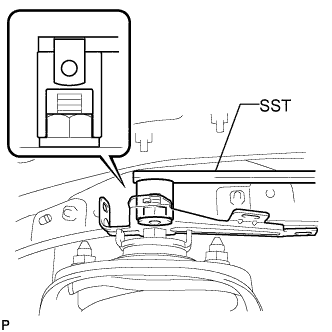

ABSORBER CONTROL ACTUATOR > INSTALLATION |
| 1. INSTALL SUSPENSION CONTROL BRACKET LH |
|  |
Using SST, install the bracket with the nut.
| 2. INSTALL ABSORBER CONTROL ACTUATOR LH |
Using a hexagon wrench (4 mm), install the absorber control actuator with the 2 hexagon socket head cap bolts.
Connect the connector, and then attach the 3 clamps.
| 3. INSTALL FRONT WHEEL |
| 4. CONNECT CABLE TO NEGATIVE BATTERY TERMINAL |